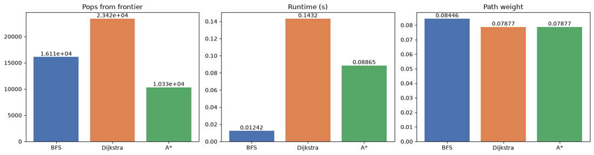

Algorithms · Spring 2026
BFS, Dijkstra and A* on a road graph
Three shortest-path searches written from scratch and compared on a road graph of about 104,000 vertices.
- Python
- Graph algorithms
- Priority queues
- Matplotlib


Overview
I implemented a weighted graph class, an indexed minimum priority queue, and three searches: breadth-first search, Dijkstra's algorithm and A*. A notebook runs all three between the same pair of points and plots the vertices each one explores.
On the included road graph (103,959 vertices), BFS popped 16,109 vertices, Dijkstra 23,416 and A* 10,328. Dijkstra and A* both found the lowest-weight path (0.078767). BFS minimizes edge count rather than weight, so it returned a heavier path (0.084463).
Adapted from CIS 454 (AI and Advanced Python) Assignment 6, University of Maine at Augusta, Spring 2026. Original assignment given by Rocko Graziano.
- Role
- Implementation and analysis
- Timeline
- Spring 2026
- Focus
- Algorithms
- Tools
- Python, Graph algorithms, Priority queues, Matplotlib
Highlights
- Built a weighted graph class and an indexed minimum priority queue.
- Implemented BFS, Dijkstra's algorithm and A* with a shared interface and pop counting.
- A* found the same lowest-weight path as Dijkstra with fewer than half the frontier pops.
Source code
ShowHide search.py234 lines
"""
search.py
BFS, Dijkstra and A* graph searches.
Adapted from CIS 454 (AI and Advanced Python) Assignment 6, University of Maine at Augusta,
Spring 2026. Original assignment given by Rocko Graziano.
"""
import math
import pickle
from collections import deque
from typing import Optional
from IndexMinPQ import *
from graph import Graph
def _build_path(prior: dict, t: int) -> list[int]:
""" Walk the prior links back from t to the source (whose prior is None). """
path = []
node = t
while node is not None:
path.append(node)
node = prior.get(node)
path.reverse()
return path
def BFS(G: Graph, s: int, t: int, debug: bool = False,
trace: Optional[list] = None) -> tuple[list[int], int, int]:
"""
Find the path with the fewest edges from s to t in an unweighted search.
The target is considered found when it is first encountered, not when it is popped.
trace: optional list; every popped node is appended in pop order (for plotting).
return: path - a list of the nodes from s to t, including both
path length - the number of edges in the path
popcount - the number of pops from the search frontier
"""
popcount = 0
print(f'\nUsing BFS to find path from {s} to {t}')
# Trivial case: the target is the source (it would otherwise never be "encountered")
if s == t:
return [s], 0, popcount
explored = {s: True} # Source node starts explored
prior = {s: None} # Source node doesn't have a prior node
frontier = deque([s])
while frontier:
# Pop the first node off; the first iteration returns the source node
v = frontier.popleft()
popcount += 1
if trace is not None:
trace.append(v)
if debug:
print(f' pop #{popcount}: {v}')
# Iterate over all the edges connected to the current node (breadth)
for edge in G.edgesOf(v):
u = edge.t
# Only look at nodes that haven't been explored
if not explored.get(u, False):
explored[u] = True
prior[u] = v
# Target found when first encountered: rebuild and return the path
if u == t:
path = _build_path(prior, t)
return path, len(path) - 1, popcount
frontier.append(u)
# Return flag data in case no path exists
return [], -1, popcount
def Dijkstra(G: Graph, s: int, t: int, debug: bool = False,
trace: Optional[list] = None) -> tuple[list[int], float, int]:
"""
Find the shortest path (by edge weights) from s to t in a weighted graph.
trace: optional list; every popped node is appended in pop order (for plotting).
return: path - a list of the nodes from s to t, including both
distance - the sum of the edge weights from s to t
popcount - the number of pops from the search frontier
"""
popcount = 0
print(f'\nUsing Dijkstra to find path from {s} to {t}')
prior = {s: None} # Stores previous nodes visited
pathcost = {s: 0} # Cheapest known cost from s to each node
frontier = IndexMinPQ(G.sizeV()) # Min priority queue keyed by cost
# Every node starts at infinity except the source
for v in G.getVertices():
frontier.push(v.id, 0 if v.id == s else math.inf)
while not frontier.isEmpty():
v, cost = frontier.pop()
popcount += 1
if trace is not None:
trace.append(v)
if debug:
print(f' pop #{popcount}: {v} (cost {cost:.6g})')
# Everything left is unreachable from s, so stop searching
if cost == math.inf:
break
# Because the frontier is a min priority queue, t is only popped once
# its cheapest path has been found
if v == t:
return _build_path(prior, t), pathcost[t], popcount
# Relax every edge leaving v
for edge in G.edgesOf(v):
u = edge.t
new_cost = pathcost[v] + edge.weight
if new_cost < pathcost.get(u, math.inf):
prior[u] = v
pathcost[u] = new_cost
if frontier.contains(u):
frontier.update(u, new_cost)
# Return flag data in case no path exists
return [], -1, popcount
def aStar(G: Graph, s: int, t: int, debug: bool = False,
trace: Optional[list] = None) -> tuple[list[int], float, int]:
"""
Find the shortest path (by edge weights) from s to t in a weighted graph,
guided by a euclidean-distance heuristic on each vertex's lat/lon.
trace: optional list; every popped node is appended in pop order (for plotting).
return: path - a list of the nodes from s to t, including both
distance - the distance from s to t
popcount - the number of pops from the search frontier
"""
def H(u: int, v: int) -> float:
""" Euclidean distance between the lat/lon of vertices u and v. """
tags_u = G.getTags(u)
tags_v = G.getTags(v)
lat_u, lon_u = tags_u['lat'], tags_u['lon']
lat_v, lon_v = tags_v['lat'], tags_v['lon']
return math.sqrt((lat_u - lat_v) ** 2 + (lon_u - lon_v) ** 2)
popcount = 0
print(f'\nUsing A* to find path from {s} to {t}')
prior = {s: None} # Stores previous nodes visited
pathcost = {s: 0} # g(n): cheapest known cost from s to n
frontier = IndexMinPQ(G.sizeV()) # Keyed by f(n) = g(n) + H(n, t)
# The only difference from Dijkstra's setup: the source starts at H(s, t), not 0
for v in G.getVertices():
frontier.push(v.id, H(s, t) if v.id == s else math.inf)
while not frontier.isEmpty():
v, cost = frontier.pop()
popcount += 1
if trace is not None:
trace.append(v)
if debug:
print(f' pop #{popcount}: {v} (f {cost:.6g})')
# Everything left is unreachable from s, so stop searching
if cost == math.inf:
break
# With a consistent heuristic the first pop of t is on a cheapest path
if v == t:
return _build_path(prior, t), pathcost[t], popcount
for edge in G.edgesOf(v):
u = edge.t
new_g = pathcost[v] + edge.weight
if new_g < pathcost.get(u, math.inf):
prior[u] = v
pathcost[u] = new_g
# The key is g plus the heuristic, so nodes heading toward t pop
# first. You wouldn't start driving north to get to Florida.
if frontier.contains(u):
frontier.update(u, new_g + H(u, t))
# Return flag data in case no path exists
return [], -1, popcount
if __name__ == "__main__":
import os
os.chdir(os.path.dirname(os.path.abspath(__file__)))
testcases = [('romania.pickle', 0, 1, False),
('romania.pickle', 13, 4, False),
('kennebec.pickle', 31358, 101336, False),
]
for testcase in testcases:
print(f'\nTesting against {testcase[0]}\n')
with open(testcase[0], 'rb') as f:
G = pickle.load(f)
print(f'There are {G.sizeV()} nodes in this graph')
path, pathlength, popcount = BFS(G, testcase[1], testcase[2], debug=testcase[3])
print(f'BFS Path is {pathlength} edges long; found in {popcount:,d} pops\n{path}')
path, pathlength, popcount = Dijkstra(G, testcase[1], testcase[2], debug=testcase[3])
print(f'Dijkstra Path is {pathlength} long in {len(path)-1} edges; found in {popcount:,d} pops\n{path} ')
path, pathlength, popcount = aStar(G, testcase[1], testcase[2], debug=testcase[3])
print(f'A* Path is {pathlength} long in {len(path)-1} edges; found in {popcount:,d} pops\n{path} ')
ShowHide graph.py78 lines
"""
graph.py
Minimal undirected/directed weighted graph. Attribute names (V, id, tags, edges,
s, t, weight) match the fields stored in the .pickle files, so do not rename them.
"""
class Graph:
class Edge:
def __init__(self, s: int, t: int, weight: float = 1.0):
self.s = s
self.t = t
self.weight = weight
def __repr__(self):
return f'Edge({self.s}->{self.t}, w={self.weight:.6g})'
class Vertex:
def __init__(self, id: int, tags: dict = None):
self.id = id
self.tags = tags if tags is not None else {}
self.edges = set() # set of Graph.Edge (default identity hash)
def __repr__(self):
return f'Vertex({self.id}, {len(self.edges)} edges)'
def __init__(self):
self.V = []
# ---- building -------------------------------------------------------
def addVertex(self, tags: dict = None) -> int:
v = Graph.Vertex(len(self.V), tags)
self.V.append(v)
return v.id
def addEdge(self, s: int, t: int, weight: float = 1.0, directed: bool = False):
self._vertex(s).edges.add(Graph.Edge(s, t, weight))
if not directed:
self._vertex(t).edges.add(Graph.Edge(t, s, weight))
# ---- queries --------------------------------------------------------
def _vertex(self, v: int):
"""Fast path: vertex id == list index (true for the provided data)."""
if 0 <= v < len(self.V) and self.V[v].id == v:
return self.V[v]
idx = self.__dict__.get('_idx')
if idx is None:
idx = self.__dict__['_idx'] = {x.id: x for x in self.V}
return idx[v]
def sizeV(self) -> int:
return len(self.V)
def sizeE(self) -> int:
return sum(len(v.edges) for v in self.V)
def getVertices(self):
return self.V
def getVertex(self, v: int):
return self._vertex(v)
def getTags(self, v: int) -> dict:
return self._vertex(v).tags
def edgesOf(self, v: int):
return self._vertex(v).edges
def __repr__(self):
return f'Graph(|V|={self.sizeV()}, |E|={self.sizeE()})'
# Aliases in case a pickle references module-level names (graph.Vertex / graph.Edge)
Vertex = Graph.Vertex
Edge = Graph.Edge
ShowHide IndexMinPQ.py106 lines
"""
IndexMinPQ.py
Indexed min priority queue (binary heap). Items are integers 0..n-1, each with a
float key. Supports push, pop-min, contains and update (decrease OR increase key)
in O(log n).
"""
class IndexMinPQ:
def __init__(self, n: int):
self.n = n
self._heap = [] # heap position : item index
self._pos = [-1] * n # item index : heap position (-1 = absent)
self._key = [None] * n # item index : key
def isEmpty(self) -> bool:
return not self._heap
def size(self) -> int:
return len(self._heap)
def __len__(self):
return len(self._heap)
def contains(self, i: int) -> bool:
self._check(i)
return self._pos[i] != -1
def push(self, i: int, key: float):
self._check(i)
if self._pos[i] != -1:
raise ValueError(f'index {i} is already in the queue')
self._key[i] = key
self._pos[i] = len(self._heap)
self._heap.append(i)
self._swim(self._pos[i])
def pop(self) -> tuple[int, float]:
"""Remove and return (index, key) with the smallest key."""
if not self._heap:
raise IndexError('pop from empty IndexMinPQ')
top = self._heap[0]
key = self._key[top]
last = self._heap.pop()
self._pos[top] = -1
self._key[top] = None
if self._heap:
self._heap[0] = last
self._pos[last] = 0
self._sink(0)
return top, key
def peek(self) -> tuple[int, float]:
top = self._heap[0]
return top, self._key[top]
def update(self, i: int, key: float):
self._check(i)
if self._pos[i] == -1:
raise KeyError(f'index {i} is not in the queue')
self._key[i] = key
self._swim(self._pos[i])
self._sink(self._pos[i])
def keyOf(self, i: int) -> float:
return self._key[i]
# ---- internals ------------------------------------------------------
def _check(self, i: int):
if not 0 <= i < self.n:
raise IndexError(f'index {i} out of range 0..{self.n - 1}')
def _less(self, a: int, b: int) -> bool:
return self._key[self._heap[a]] < self._key[self._heap[b]]
def _swap(self, a: int, b: int):
h = self._heap
h[a], h[b] = h[b], h[a]
self._pos[h[a]] = a
self._pos[h[b]] = b
def _swim(self, k: int):
while k > 0:
parent = (k - 1) // 2
if self._less(k, parent):
self._swap(k, parent)
k = parent
else:
break
def _sink(self, k: int):
n = len(self._heap)
while True:
child = 2 * k + 1
if child >= n:
break
if child + 1 < n and self._less(child + 1, child):
child += 1
if self._less(child, k):
self._swap(k, child)
k = child
else:
break
Run it
jupyter notebook visualize.ipynbInstall dependencies with pip install -r requirements.txt from the Projects repository.